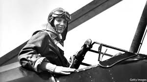
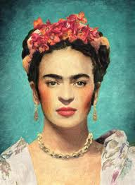

Inspirational Women
Malala Yousafzai (1997-present)
Malala is a young Pakistani activist for female education and the youngest person
to ever recieve a Nobel Prize.
As a young girl Malala defied the Taliban in Pakistan who stopped all girls going to school
and demanded that girls be allowed an education.
In 2012 she was shot in the head by the
Taliban but survived.
She continued to spread her message and even wrote an autobiography.
When she was 17 years old she was awarded the Nobel Prize.
She stood up for women’s rights and even survived an assassination
attempt as a child,
making her one of the strongest and most influential women of today.
-“One child, one teacher, one book, one pen can change the world.”
Amelia Earhart (1897-1937)
Amelia Mary Earhart was an American aviation pioneer and author.

Earhart was the first female aviator to fly solo across the Atlantic Ocean.
She received the U.S. Distinguished Flying Cross for this accomplishment.
During a flight to circumnavigate the globe, Earhart disappeared somewhere over the
Pacific in July 1937. Her plane wreckage was never found, and she was officially declared
lost at sea. Her disappearance remains one of the greatest unsolved mysteries of the twentieth century.
Amelia defied traditional gender roles and didn’t listen when she was told that she
couldn’t do the things that men could do.
-"Women must try to do things as men have tried. When they fail, their
failure must be but a challenge to others."
Frida Kahlo (1907-1954)
Frida Kahlo was a Mexican artist who painted many portraits, self-portraits,

and works inspired by the nature and artifacts of Mexico. She is considered one of Mexico’s greatest artists.
She was in poor health during her childhood and had polio when she was 6,
leaving her bedridden for over 9 months. This affected one of her legs and she walked
with a limp for the rest of her life. During school, she joined a group of students who shared
the same political views as each other. She fell in love with the group leader Alejandro Gomez Arias.
One evening as she was travelling home she was is a tragic bus accident leaving her seriously injured.
A steel handrail impaled her through the hip. Her spine and pelvis are fractured and this
accident left her in a great deal of pain, both physically and physiologically.
She was bedridden for a very large portion of her life and started painting to pass the time.
She married a Mexican artist, Diego Rivera and they had an unhappy marriage until she died in 1954.
-“I paint self-portraits because I am so often alone, because I am the person I know best.”